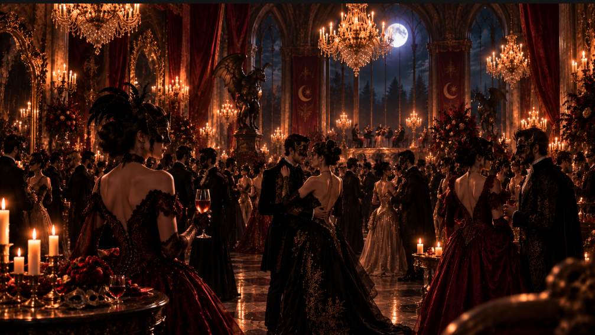
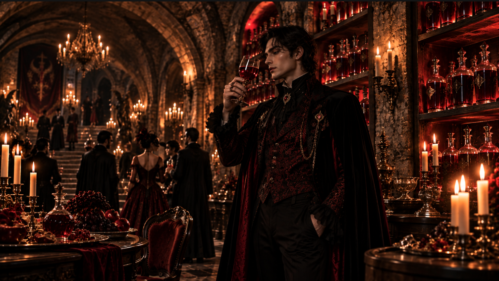
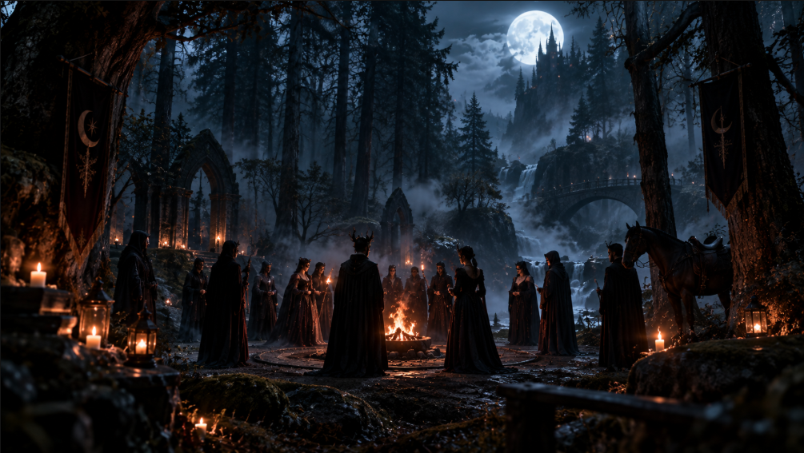
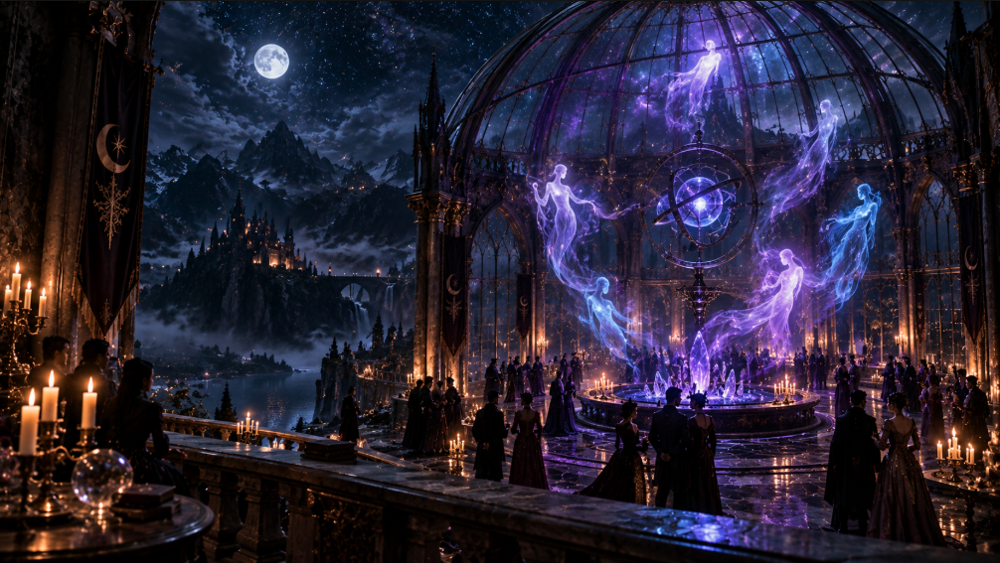

14 DE NOVIEMBRE · SALÓN DE LOS ESPEJOS
El Gran Baile de Máscaras del Eclipse
Orquesta barroca en clave menor, elixires oscuros y discreción absoluta entre linajes ancestrales.
HOSPITALIDAD ARCANA & CINCO ESTRELLAS
FASE LUNAR: MENGUANTE
EFEMÉRIDES & CEREMONIAL MAYOR
Encuentros nocturnos orquestados bajo el amparo de la noche perpetua. Asilo noble garantizado para toda estirpe del abismo bajo el Tratado de las Sombras.
CALENDARIO DE LA ORDEN

14 DE NOVIEMBRE · SALÓN DE LOS ESPEJOS
Orquesta barroca en clave menor, elixires oscuros y discreción absoluta entre linajes ancestrales.

NOVILUNIO · CAVA SUBTERRÁNEA
Degustación vertical de plasma biosintético grado Royal con notas de roble húngaro de los Cárpatos.

PLENILUNIO · BOSQUE DEL ECLIPSE
Carrera libre por la espesura protegida con salvaguardas rúnicas, sin cazadores ni trazas de plata.

VELO TENUE · CÚPULA DE CRISTAL
Sincronización armónica en frecuencias de 4.5 kHz para encuentros lúcidos con entidades no corporales.
ATENCIÓN CONFIDENCIAL
Reserve un santuario consagrado para su clan o celebración exclusiva.